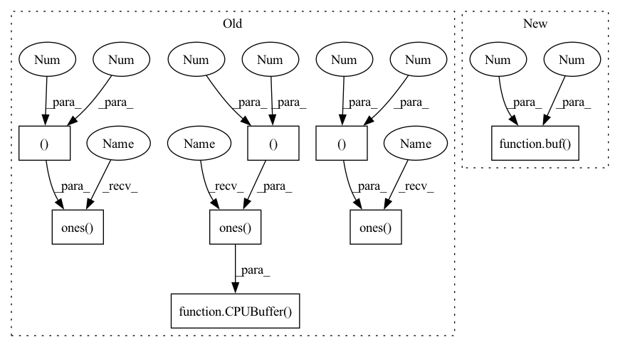

Pattern ID :37954

Before Change
self.helper_compare_graph(RG)
def test_add_graph_prune(self):
a = CPUBuffer(np.ones((1,1), dtype=np.float32))
ast = LazyOp(MovementOps.RESHAPE, (a,), (4, 4))
ret = CPUBuffer(np.ones((4,4), dtype=np.float32))
log_op(ret, ast, show_graph=True)
b = CPUBuffer(np.ones((4,4), dtype=np.float32))
ast = LazyOp(BinaryOps.ADD, (ret,b))
ret = CPUBuffer(np.ones((4,4), dtype=np.float32))
log_op(ret, ast, show_graph=True)
After Change
ret = buf(4,4)
log_op(ret, ast, show_graph=True)
b = buf(4,4)
ast = LazyOp(BinaryOps.ADD, (ret,b))
ret = buf(4,4)
log_op(ret, ast, show_graph=True)
prune_graph()
In pattern: SUPERPATTERN
Frequency: 3
Non-data size: 8
Instances
Fragment ID: 108691066
Project Name: geohot/tinygrad
Commit Name: f5467cfedcdde0b9758ff1b8add533bc2b9a6f83
Time: 2023-03-18
Author: 72895+geohot@users.noreply.github.com
File Name: test/unit/test_graph.py
M Class Name: TestGraph
N Class Name: TestGraph
M Method Name: test_add_graph_prune(1)
N Method Name: test_add_graph_prune(1)
M Parent Class: unittest.TestCase
N Parent Class: unittest.TestCase
M File Name: test/unit/test_graph.py
N File Name: test/unit/test_graph.py
M Start Line: 51
M End Line: 58
N Start Line: 52
N End Line: 59
'>
Before Change
self.helper_compare_graph(RG)
def test_add_sum_graph(self):
a = CPUBuffer(np.ones((4,4), dtype=np.float32))
b = CPUBuffer(np.ones((1,1), dtype=np.float32))
op0 = LazyOp(MovementOps.RESHAPE, (b,), (4, 4))
op1 = LazyOp(BinaryOps.ADD, (a,op0))
ast = LazyOp(ReduceOps.SUM, (op1,), (1,1))
ret = CPUBuffer(np.ones((1,1), dtype=np.float32))
RG = nx.DiGraph()
RG.add_node(0, label="(4, 4)")
After Change
self.helper_compare_graph(RG)
def test_add_sum_graph(self):
a = buf(4,4)
b = buf(1,1)
op0 = LazyOp(MovementOps.RESHAPE, (b,), (4, 4))
op1 = LazyOp(BinaryOps.ADD, (a,op0))
ast = LazyOp(ReduceOps.SUM, (op1,), (1,1))
'>
Fragment ID: 108691058
Project Name: geohot/tinygrad
Commit Name: f5467cfedcdde0b9758ff1b8add533bc2b9a6f83
Time: 2023-03-18
Author: 72895+geohot@users.noreply.github.com
File Name: test/unit/test_graph.py
M Class Name: TestGraph
N Class Name: TestGraph
M Method Name: test_add_sum_graph(1)
N Method Name: test_add_sum_graph(1)
M Parent Class: unittest.TestCase
N Parent Class: unittest.TestCase
M File Name: test/unit/test_graph.py
N File Name: test/unit/test_graph.py
M Start Line: 33
M End Line: 38
N Start Line: 34
N End Line: 39
'>
Before Change
assert nx.is_isomorphic(G, RG, node_match=lambda x,y: x["label"] == y["label"], edge_match=lambda x,y: x["label"] == y["label"] if "label" in y else True)
def test_add_graph(self):
a = CPUBuffer(np.ones((4,4), dtype=np.float32))
b = CPUBuffer(np.ones((4,4), dtype=np.float32))
ast = LazyOp(BinaryOps.ADD, (a,b))
ret = CPUBuffer(np.ones((4,4), dtype=np.float32))
RG = nx.DiGraph()
RG.add_node(0, label="(4, 4)")
RG.add_node(1, label="(4, 4)")
After Change
a = buf(4,4)
b = buf(4,4)
ast = LazyOp(BinaryOps.ADD, (a,b))
ret = buf(4,4)
RG = nx.DiGraph()
RG.add_node(0, label="(4, 4)")
RG.add_node(1, label="(4, 4)")
'>
Fragment ID: 108691010
Project Name: geohot/tinygrad
Commit Name: f5467cfedcdde0b9758ff1b8add533bc2b9a6f83
Time: 2023-03-18
Author: 72895+geohot@users.noreply.github.com
File Name: test/unit/test_graph.py
M Class Name: TestGraph
N Class Name: TestGraph
M Method Name: test_add_graph(1)
N Method Name: test_add_graph(1)
M Parent Class: unittest.TestCase
N Parent Class: unittest.TestCase
M File Name: test/unit/test_graph.py
N File Name: test/unit/test_graph.py
M Start Line: 17
M End Line: 20
N Start Line: 18
N End Line: 21